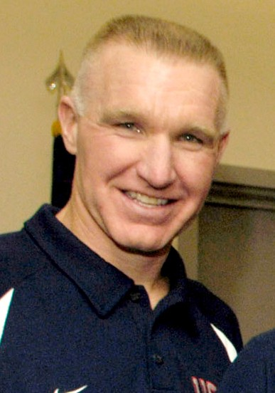
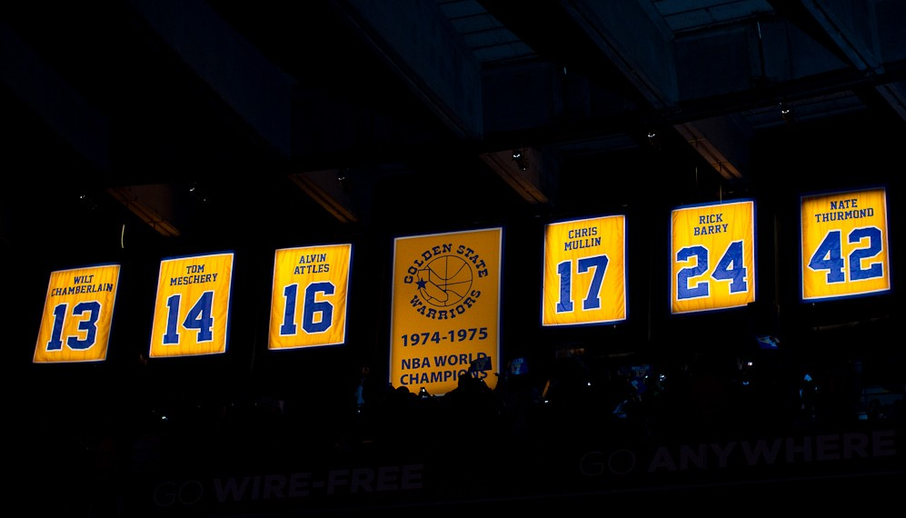
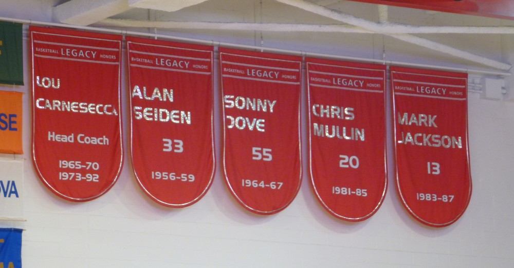
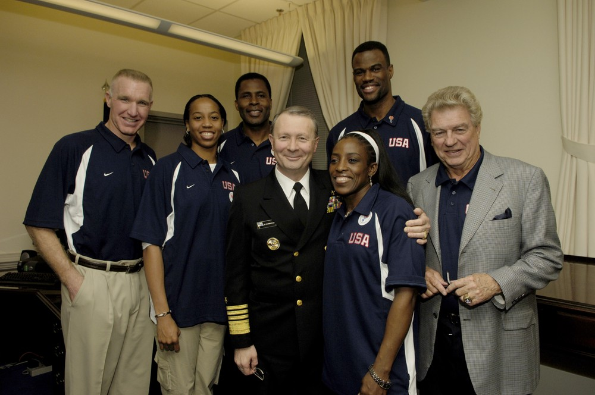

Chris Mullin
The gym rat from Brooklyn who got sober, got in shape, and turned a sweet left handed jumper into five straight 25 point seasons and Run TMC.
The Chris Mullin Story
If you grew up a Warriors fan in the late 80s and early 90s, the sound of the whole thing was Chris Mullin's left hand. That quick little release from the wing. Nobody thought he could run or jump. He just never missed.
He was born in Brooklyn on July 30, 1963, and wore 17 for John Havlicek. He went to the Bronx and Harlem as a kid to find the best games in the city, won a national youth free throw contest in 1974, and led Xaverian to a state title in 1981.
At St. John's he played for Lou Carnesecca, won Big East Player of the Year three times, won the 1985 Wooden Award, took the Redmen to the 1985 Final Four, and left as the school's all time leading scorer with 2,440 points. He also won Olympic gold in 1984.
The Warriors took him seventh in 1985. He missed all of training camp before coming to terms on a contract, and on the day he signed he played 24 minutes and hit the winning basket with 15 seconds left. He shot 89.6 percent from the line as a rookie.
Those first years were rough. The teams bickered and lost, and Mullin was drinking. In his third season Don Nelson got him to admit he was an alcoholic and pushed him into treatment. He spent 48 days in a facility during the season and came back a different man, a fitness freak who still averaged 20.2 points that year.
Then he took off. Starting in 1988/89 he averaged at least 25 points for five straight seasons. That first year he scored 26.5 a game, made All NBA Second Team, dropped a career high 47 on the Clippers, and the Warriors swept the Utah Jazz in the first round.
When Tim Hardaway joined Mullin and Mitch Richmond, Run TMC was born, named after Run DMC. Nelson let them fly. The 1990/91 team opened with a 162 to 158 win and upset San Antonio in the playoffs.
In 1991/92 he made All NBA First Team, averaged 25.6 points, finished sixth in MVP voting, and led the league in minutes for the second straight year. That summer he won his second gold medal on the Dream Team, shooting 61.9 percent in Barcelona.
Injuries hit after that. A torn ligament in his thumb cost him half of 1992/93, and after the 1996/97 season the Warriors traded him to Indiana, where he started all 82 games for Larry Bird, led the NBA at .939 from the line, and reached the 2000 Finals.
He came home for one more year in 2000/01 and finished with 807 games as a Warrior. Later he ran basketball operations for the team, coached St. John's from 2015 to 2019, and in 2019 joined NBC Sports Bay Area as a Warriors studio analyst.
The Hall of Fame inducted him twice, with the Dream Team and on his own in 2011. On March 19, 2012, the Warriors raised number 17 to the rafters, the sixth number the franchise ever retired.
What He Meant to Us
Chris Mullin is my favorite kind of player. No hops, no speed, nothing that jumps off the screen in warmups. Then the game starts and he's got 30, and you can't remember a single shot he missed.
The part of his story I think about most is the drinking. He was a 24 year old kid from Brooklyn, out of shape and unhappy, and Nellie sat him down and got him help. He came back and became a monster. Five straight years at 25 a game. That doesn't happen without him deciding to save his own career.
Run TMC was the most fun I've ever had watching a team that never got close to a ring. Hardaway, Richmond and Mullin, the highest scoring trio in the league, opening a season with 162 points. Nellie just let them run.
He never wanted to leave, and he came back. One more year in 2000/01 just to help the young guys. Then he showed up in the front office, then on the TV broadcasts. He's a Brooklyn guy who became a Bay Area guy, and he said it himself the night 17 went up. He grew up right here in front of us.
In Pictures



Why He Was Clutch
Mullin was at his best when the season was on the line. In the 1989 playoffs, after the Warriors swept the Midwest champion Jazz, he averaged 29.4 points in eight games on 54 percent shooting. In 1991 he played nearly 46 minutes a night in the playoffs and averaged 23.8 points and 7.3 rebounds.
He was a closer at the line, too. An 86.5 percent career free throw shooter, and the league leader at .939 in 1997/98. Foul him late and you were just handing over the points.
And from his very first night he made the winning shot. Day one, no training camp, 24 minutes, game winner with 15 seconds left. He knew where to be.
Clutch Moments
- 1985/86 season
Game winner on day one
Mullin missed all of rookie camp and six games before coming to terms with the Warriors. The day he signed, he played 24 minutes and scored the winning basket with 15 seconds left.
- 1988/89 season
47 on the Clippers
In his breakout season Mullin scored a career high 47 points in an overtime game against the Clippers, going 16 of 25 from the floor and 15 of 15 from the line. He also had his first career triple double that year.
- 1989 playoffs
Sweeping the Jazz
The fourth place Warriors swept the Midwest Division champion Utah Jazz in the first round. Mullin averaged 29.4 points in eight playoff games before Phoenix ended the run.
- 1990/91 season
Run TMC takes off
With Hardaway, Richmond and Mullin, Don Nelson's Warriors became the highest scoring trio in the league. They opened the season with a 162 to 158 win and upset the Midwest champion Spurs in the first round.
- 1991/92 season
First team All NBA
Mullin averaged 25.6 points, led the NBA in minutes for the second straight year, made his fourth straight All Star team and earned first team All NBA as the Warriors won 55 games.
- 1992 Olympics
The Dream Team
Mullin played next to Jordan, Magic and Bird in Barcelona, started two games, averaged 12.9 points and shot 61.9 percent from the field and 53.8 percent from three on the way to his second Olympic gold.
- March 19, 2012
Number 17 goes up
At halftime at Oracle Arena, with Hardaway, Richmond, Attles and Nelson in the building, the Warriors retired number 17. His daughter Kiera unveiled the jersey.
The Highlights
What They Said About Mullin
“I came here to play and help these young guys.”
“It’s an ultimate honor, and I didn’t expect it.”
“Basketball is something to celebrate. In my family, it was a gathering. It wasn’t just a game; it’s something you do together.”
“Chris was an incredible player, a great teammate, a tireless worker and a dream for a coach.”
“This is a wonderful thing, especially for a guy who supposedly could not run and jump. Imagine if he could run and jump!”
“On the floor, he was the hardest working player that I have ever been around in all of my years in basketball and, as we all know, his shooting exploits were simply amazing.”
Career Stats
| Year | Team | G | MP | PTS | REB | AST | STL | BLK | FG% | 3P% | FT% |
|---|---|---|---|---|---|---|---|---|---|---|---|
| 1985/86 | GS | 55 | 25.3 | 14.0 | 2.1 | 1.9 | 1.3 | 0.4 | .463 | .185 | .896 |
| 1986/87 | GS | 82 | 29.0 | 15.1 | 2.2 | 3.2 | 1.2 | 0.4 | .514 | .302 | .825 |
| 1987/88 | GS | 60 | 33.9 | 20.2 | 3.4 | 4.8 | 1.9 | 0.5 | .508 | .351 | .885 |
| 1988/89 | GS | 82 | 37.7 | 26.5 | 5.9 | 5.1 | 2.1 | 0.5 | .509 | .230 | .892 |
| 1989/90 | GS | 78 | 36.3 | 25.1 | 5.9 | 4.1 | 1.6 | 0.6 | .536 | .372 | .889 |
| 1990/91 | GS | 82 | 40.4 | 25.7 | 5.4 | 4.0 | 2.1 | 0.8 | .536 | .301 | .884 |
| 1991/92 | GS | 81 | 41.3 | 25.6 | 5.6 | 3.5 | 2.1 | 0.8 | .524 | .366 | .833 |
| 1992/93 | GS | 46 | 41.3 | 25.9 | 5.0 | 3.6 | 1.5 | 0.9 | .510 | .451 | .810 |
| 1993/94 | GS | 62 | 37.5 | 16.8 | 5.6 | 5.1 | 1.7 | 0.9 | .472 | .364 | .753 |
| 1994/95 | GS | 25 | 35.6 | 19.0 | 4.6 | 5.0 | 1.5 | 0.8 | .489 | .452 | .879 |
| 1995/96 | GS | 55 | 29.4 | 13.3 | 2.9 | 3.5 | 1.4 | 0.6 | .499 | .393 | .856 |
| 1996/97 | GS | 79 | 34.6 | 14.5 | 4.0 | 4.1 | 1.6 | 0.4 | .553 | .411 | .864 |
| 1997/98 | IND | 82 | 26.5 | 11.3 | 3.0 | 2.3 | 1.2 | 0.5 | .481 | .440 | .939 |
| 1998/99 | IND | 50 | 23.6 | 10.1 | 3.2 | 1.6 | 0.9 | 0.3 | .477 | .465 | .870 |
| 1999/00 | IND | 47 | 12.4 | 5.1 | 1.6 | 0.8 | 0.6 | 0.2 | .428 | .409 | .902 |
| 2000/01 | GS | 20 | 18.7 | 5.8 | 2.1 | 1.0 | 0.8 | 0.5 | .340 | .365 | .857 |
| Career | 986 | 32.6 | 18.2 | 4.1 | 3.5 | 1.6 | 0.6 | .509 | .384 | .865 |
Per game averages except G. Warriors only, 807 games: 20.1 points, 4.4 rebounds, 3.9 assists, .513 from the field, .862 from the line. Scroll the table sideways on a phone.
Playoffs, per game
| Year | Team | G | MP | PTS | REB | AST | STL | BLK | FG% | 3P% | FT% |
|---|---|---|---|---|---|---|---|---|---|---|---|
| 1986/87 | GS | 10 | 26.2 | 11.3 | 1.5 | 2.3 | 0.9 | 0.2 | .500 | .750 | .750 |
| 1988/89 | GS | 8 | 42.6 | 29.4 | 5.9 | 4.5 | 1.8 | 1.4 | .540 | .125 | .866 |
| 1990/91 | GS | 8 | 45.8 | 23.8 | 7.3 | 2.9 | 1.9 | 1.5 | .527 | .692 | .860 |
| 1991/92 | GS | 4 | 42.0 | 17.8 | 3.0 | 3.0 | 1.3 | 0.5 | .429 | .333 | .929 |
| 1993/94 | GS | 3 | 45.0 | 25.3 | 4.7 | 3.7 | 0.0 | 1.7 | .588 | .500 | .909 |
| 1997/98 | IND | 16 | 25.8 | 8.9 | 3.6 | 1.4 | 0.9 | 0.6 | .460 | .385 | .857 |
| 1998/99 | IND | 13 | 21.8 | 9.5 | 1.5 | 1.2 | 0.8 | 0.2 | .410 | .400 | .870 |
| 1999/00 | IND | 9 | 10.0 | 3.4 | 1.6 | 0.6 | 0.7 | 0.1 | .476 | .250 | .818 |
| Career | 71 | 29.0 | 13.8 | 3.3 | 2.1 | 1.0 | 0.6 | .495 | .409 | .859 |